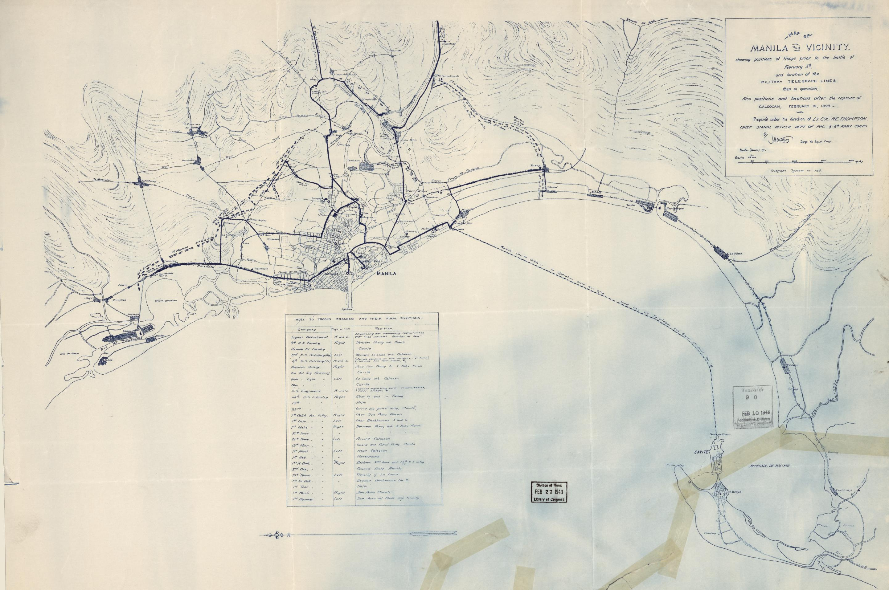

Key Stages of the Occupation
Open City and Initial Occupation
Dec 1941 - Jan 1942
Following Pearl Harbor, Japanese forces advanced rapidly. Manila was declared an open city on December 26, 1941, to prevent its destruction. Despite this, Japanese forces entered and occupied Manila on January 2, 1942, beginning a harsh period of rule.
Life Under Siege
1942 - Early 1945
Manilans endured severe economic hardship, hyperinflation, food shortages, and brutal suppression. The Japanese military administration controlled all aspects of life, leading to widespread suffering and the rise of resistance movements.
The Battle for Liberation
February - March 1945
The month-long Battle of Manila to liberate the city resulted in its catastrophic destruction and the massacre of an estimated 100,000 civilians by retreating Japanese forces. It was one of the deadliest urban battles of World War II.
Click on each card to reveal more information about these key stages.
Japanese Occupation of Manila
Following the attack on Pearl Harbor on December 8, 1941, Japanese forces quickly advanced on Manila. By December 26, 1941, Manila was declared an open city by General Douglas MacArthur to prevent its destruction, but the Japanese still occupied it on January 2, 1942.
Under Japanese rule, Manila suffered severe economic hardship. The Japanese took control of all banks and the money supply, resulting in hyperinflation. The sugar industry was completely shut down, and lack of fuel, poor transportation, and ineffective policies led to food shortages. By 1945, the GDP had shrunk by 70%, and the price of rice skyrocketed from ₱6 to ₱60 per kilo.
"The Pearl of the Orient was transformed into a city of fear and deprivation under Japanese occupation."
The once-vibrant capital became a shadow of its former self, with daily life marked by uncertainty and the heavy hand of the occupying forces.
Filipinos were forced to work under miserable conditions with insufficient food and healthcare. The standard of living deteriorated rapidly due to rationing and failing industries. The occupation resulted in severe economic suffering through inflation, food shortages, forced labor, and rationing.
The Battle of Manila (February 1945)
The 29-day battle to retake Manila in February 1945 proved a fight unlike any other in the Pacific War - a bloody urban brawl that forced American soldiers to battle block by block, house by house, and even room by room. The end result was the catastrophic destruction of the city and a rampage by Japanese troops that terrorized the civilian population.
Landmarks were demolished, houses torched, countless women raped, and their husbands and children murdered. An estimated 100,000 civilians were slain in a massacre as heinous as the Rape of Nanking. The battle left Manila in ruins, with its water, electricity, and transportation systems destroyed.
Phases of the Battle
Phase 1: Initial Advance
Feb 3-7, 1945: The 1st Cavalry Division reached Manila, liberating internees at Santo Tomás. The 37th Infantry Division advanced, securing the water system but facing heavy resistance.
Phase 2: Crossing the Pasig
Feb 7-12, 1945: U.S. forces controlled Manila north of the Pasig River. Japanese retreated, destroying bridges. The 37th ID crossed the Pasig under fire, establishing a bridgehead south.
Phase 3: Brutal Urban Combat
Feb 13-22, 1945: Intense building-by-building fighting. U.S. troops encountered strongpoints at Provisor Island, Paco Railroad Station, and the New Police Station, requiring heavy support.
Phase 4: Assault on Intramuros
Feb 23-26, 1945: Final assault on Intramuros after bombardment. The 129th Infantry faced tough fighting at Fort Santiago. Rear Admiral Iwabuchi committed suicide.
Phase 5: Securing the City
Feb 26 - Mar 3, 1945: Japanese remnants held out in government buildings, requiring heavy artillery. On March 3, Lt. Gen. Griswold declared Manila liberated.
Click the buttons to explore key phases of the Battle of Manila.
Manila: Then and Now
The Battle of Manila left indelible scars on the city's landscape. Many historical buildings and districts were decimated. While reconstruction has occurred over the decades, the memory of the past remains. Use the slider below to compare a scene from the ruins of 1945 with a more contemporary view of a similar area or a rebuilt landmark.

Note: The "Then" image depicts the general devastation. The "Now" image is representative of Manila's recovery and modernization. Exact location matches can be challenging due to extensive rebuilding.
Japanese Atrocities in Manila
The Battle of Manila highlighted the extreme brutality of Japanese forces toward civilians. Japanese troops used hospitals and churches for cover, knowing Americans would hesitate to fire. Mass executions, rape, and other brutal tactics were employed as they attempted to resist the American advance.
"The Japanese soldiers committed brutal acts against the Filipino people, including mass executions, torture, forced labor, and widespread sexual violence."
Many women were raped, and entire villages were massacred. The scale of the atrocities committed during the final days of the occupation left an indelible mark on the city's memory.
Ermita, a district in Manila, was particularly devastated. Like many other parts of the city, it became a place where people suffered even after the war ended. The trauma from the war, including sexual violence and massacres, haunted survivors for generations. Few Japanese soldiers or Filipino collaborators who committed war crimes were ever punished.
Gallery of Destruction and Survival
Filter images or click to view larger.
Aftermath and Legacy
Hover over the red circles on the image above for more details.
The battle left 1,010 U.S. troops dead, 5,565 wounded, and an estimated 16,665 Japanese killed, alongside the horrific toll of approximately 100,000 civilian casualties. Manila, once the "Pearl of the Orient," lay in complete ruins, with most of its infrastructure, historical landmarks, and homes destroyed. It was the second most devastated Allied capital in World War II, after Warsaw.
The 37th Infantry Division, along with other units and civilian agencies, worked tirelessly to restore essential services like water and electricity, manage the widespread looting, and clear the city of mines and unexploded ordnance. The task of rebuilding was monumental. By March 29, the division moved on to its next campaign, leaving behind a city scarred but not broken.
"The devastation of Manila in 1945 left deep scars on the city, its residents, and the broader history of the Philippines."
The battle serves as a stark reminder of the catastrophic cost of urban warfare and the profound resilience of the Filipino people who faced unimaginable horrors and then began the arduous process of rebuilding their lives and their capital.
The Battle of Manila was not only militarily significant in the Pacific War but also stands as a testament to the horrendous toll on a civilian population caught in the crossfire. It highlighted both the depths of wartime brutality and the enduring spirit of human resilience during one of history's darkest chapters.
Back to Interactive MapReferences and Further Reading
- Philippine Insurrection (Brief Summary). https://history.army.mil/Research/Reference-Topics/Army-Campaigns/Brief-Summaries/Philippine-Insurrection/
- U.S. Department of Defense (2023). Battle of Manila Foreshadowed Future Urban Warfare. https://www.defense.gov/News/Feature-Stories/Story/Article/4058939/
- Britannica. Battle of Manila Bay (1899). https://www.britannica.com/event/Battle-of-Manila-Bay-1899
- EBSCO Research Starters. Battle of Manila Bay (Military History Summary. https://www.ebsco.com/research-starters/military-history-and-science/battle-manila-bay
- Smithsonian National Museum of American History. The Mock Battle That Ended the Spanish-American War. https://americanhistory.si.edu/explore/stories/mock-battle-ended-spanish-american-war
- National Museum of the United States Army (Battle Brief): The Army and the Philippines https://www.thenmusa.org/class/battle-brief-the-army-and-the-philippines/
- Combined Arms Research Library (CARL). Battle of Manila (1945) Research Guide https://carlcgsc.libguides.com/manila
- Military History Fandom. Battle of Manila (1945) – Detailed Overview https://military-history.fandom.com/wiki/Battle_of_Manila_(1945)